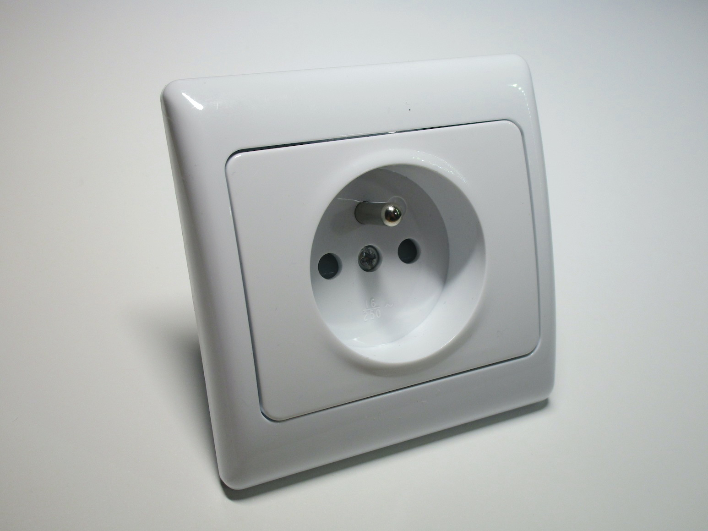
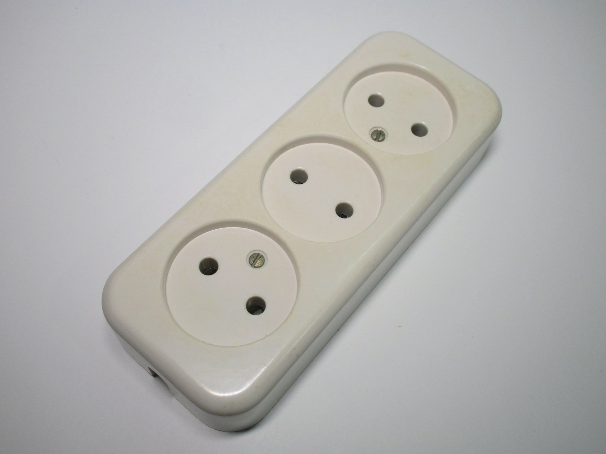
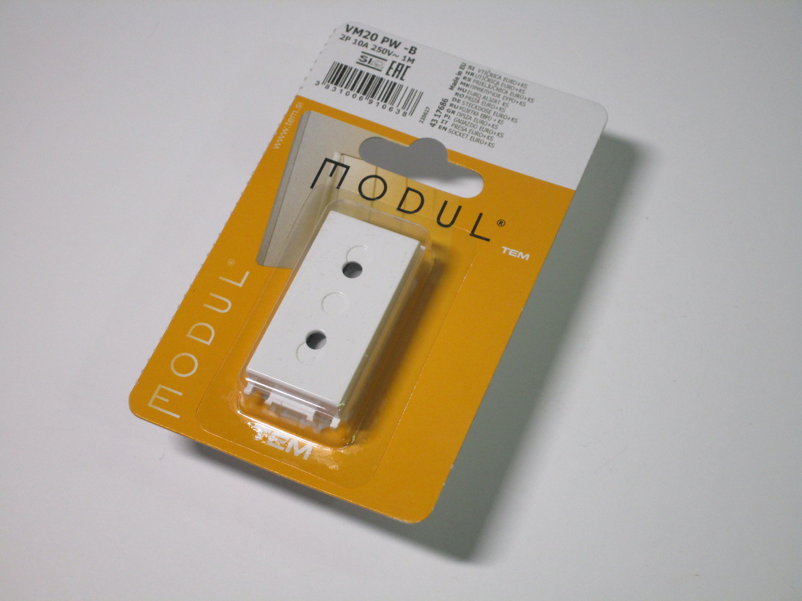
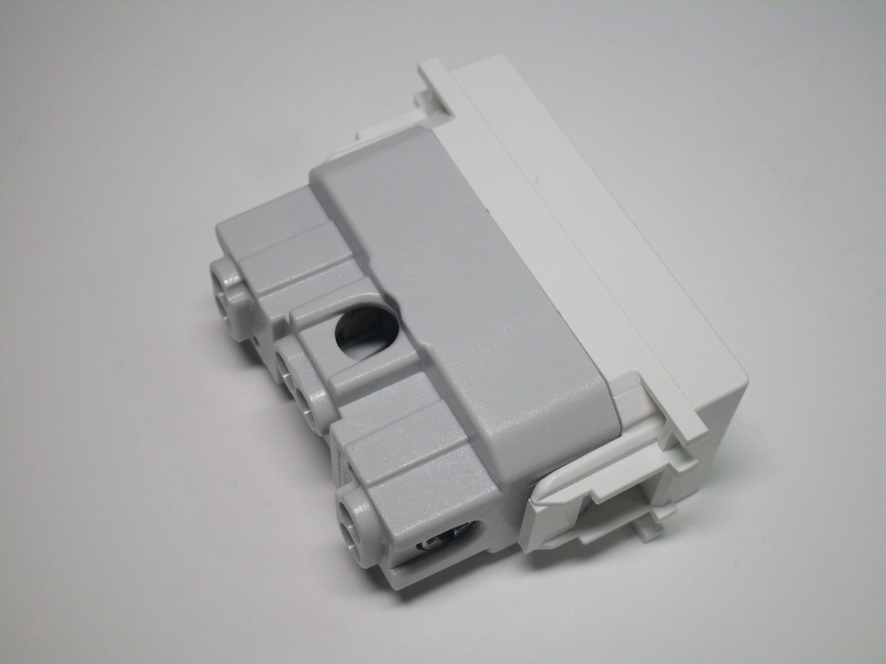
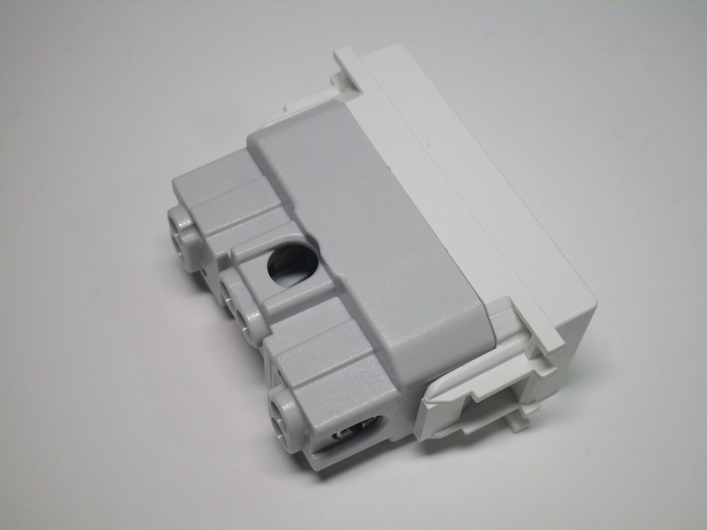

Electrical items from other European countries
This is an overview of the electrical items used in most of Europe (which are often based on German standards). While similar, generally, to Italian devices, there are still quite a few differences, primarily in the sockets (European wall boxes are different from modern Italian ones and thus the sockets are designed totally differently) and certain elements of the way power is distributed inside a home.
German-style ("Schuko") plugs and sockets
This style of plug is by far the most commonly used one in Europe, as well as some other places such as Russia and South Korea.
Standard Schuko socket
Rating: 16A 250V
This is a normal type of Schuko socket, as found in most places in Europe. It mounts to a standard European wall box (different from the modern Italian ones, although it will work in round boxes found in older houses), either using screws or metal "arms" that push outwards.
The socket is installed by removing the single screw on the front, which removes the front plastic piece. It is then possible to wire it up and install it, then the cover plate can be installed and finally the front plastic can be reinstalled.
Notably, this socket has safety shutters - not all countries in Europe mandate this universally, though shuttered sockets are generally always easily available in hardware stores, and present on power strips or extension cords.
{kind=link}
{kind=link}
{kind=link}
Double Schuko socket
Rating: 16A 250V
This socket solves a particular problem in a very clever way: how to fit two Schuko sockets in a normal wall box, which normally only has space for one? Of course, it can't create space where there isn't, but it does use the existing space inside the wall box very efficiently, in order to avoid having the socket protrude more than necessary. This is achieved by keeping the contacts, which the pins of the plugs connect to, inside the space of the wall box, and thus the only thing that has to protrude outwards is the front plastic piece.

{kind=link}
{kind=link}
French plugs and sockets
French-style power sockets (CEE 7/6) are quite interesting, due to being one of the only sockets in use in
residential installations to use a metal pin protruding from the socket as the earth connection, instead of side
tabs, like on the German ones, or a hole like most other standards around the world.
This style of socket is used in some other countries as well, like Belgium, Poland, Czechia and Slovakia.
Standard French socket
Rating: 16A 250V
This particular socket is constructed almost identically as the German one above, as they're both from the same brand, just with the earth pin and a different front plastic cover.
{kind=link}
{kind=link}
{kind=link}
Rewireable French plugs and connector socket
Rating: 16A 250V
These are two rewireable French plugs and one connector socket (as used, for example, in extension cords). The first plug has the cord entry on the side, which generally looks better when plugged to a wall socket; the other type of plug and the socket seem to be made to be easily disconnected as they both feature large handles on the side.
One interesting feature of "standard" French-style plugs (compared to the CEE 7/17 ones, meant to work in both French and Schuko sockets) is that they are completely round - this prevents people from plugging them into Schuko sockets, since those have plastic pieces on the side which stop perfectly round plugs from fitting (plus the earth tabs would also be in the way).
{kind=link}
{kind=link}
{kind=link}
French-style multi-way adaptor
Rating: 16A 250V
This is a three-way adaptor, meant to plug up to three devices into a single socket. The styling is somewhat similar to Schuko ones, since the shape of the plug is roughly the same, however since French sockets are polarised this one can only be plugged in in one way.
Notably, the plug used on this adaptor is French-only, instead of the CEE 7/17 one which would also work in Schuko sockets - this isn't common on all French multi-way adaptors, however, as other models were available which did in fact use a CEE 7/17 plug.
{kind=link}
{kind=link}
French-style power strip
Rating: 16A 250V (in theory)
This small power strip, which can connect up to three devices, isn't particularly dissimilar to equivalent Schuko ones. It features an illuminated light switch and a CEE 7/17 power cord.
There are, however, two noteworthy things about it: the first is that, despite the French sockets being polarised, only two are wired correctly - the third one, near the power switch is wired backwards compared to the one below it, since not having to have the contacts swap sides makes production much easier.
It's also noteworthy that, despite this power strip being rated at 3680W, the cord on it is of only 1mm2. This is quite concerning, as that's well below the maxium rating of that size of wire, especially under a plastic insulation.
{kind=link}
{kind=link}
Twistable French-style plug made by Legrand
Rating: 10/16A 250V
This design of plug is quite interesting, as it allows the cord grip to be placed in one of three orientations: left, down, or right. This is especially useful on French-style plugs, as they are polarised, so the plug can only fit one way and could potentially interfere with others on nearby sockets.


Non-earthed plugs and sockets
These 2-pin plugs and sockets, with a pin spacing of 19mm, were used extensively in most of Europe before earthed ones became common. Note that, despite lacking an earth connection of any sort, the sockets will accept both Schuko and French-style plugs.
Various slight variations of these plugs and sockets exist, depending on the various countries they were used in; plugs can use pins of either 4.0mm diameter (generally for 6-10A) - such is the case for Italian plugs - or of 4.8mm diameter (generally used for 16A).
Vintage bakelite plug
Rating: 10A 250V
This old plug is of the style commonly used in most of continental Europe before the more local earthed variations. Like other versions of that type of plug, it has a fairly distinctive round body, which on sockets with a deep recess (unfortunately most of the sockets used with these plugs had a fairly shallow recess) make it impossible to accidentally come in contact with the live pins on a partially-inserted plug.
Notably, this style of plug won't work with Schuko or French sockets, as on both the earth connection (and, on
the Schuko sockets, some extra plastic as well) interferes with the insertion of the plug.
Thus, this plug will only work with sockets of the period (or the Danish sockets).
Additionally, this specific plug uses 4.0mm pins, which makes it possible to use it with Italian sockets.
{kind=link}
{kind=link}
Power strip with unearthed sockets
Rating: 10-16A 250V
This power strip has three non-earthed sockets, meant for 2-pin plugs. As usual with this style of socket, it is possible to connect earthed appliances to it despite the lack of an earth connection.
The device is made in Italy and presents both Dutch and Belgian markings.
{kind=link}


Modern versions of non-earthed plugs
While the "classic" style of unearthed plugs with a round base has become quite rare, two-pin plugs are still being used for various types of devices and rewireable plugs are also available.
In Italy, 10A unearthed plugs, while generally uncommon, are available for purchase; the example shown below
will also fit in Schuko and French-style sockets.
The more common style of non-earthed plug however is the Europlug (CEE 7/16 Alternative II), rated at 2.5A, which
will work with any style of socket in mainland Europe. This is the default style of plug used for low-power devices
that do not need an earth connection, such as phone chargers.


TEM "Modul" Europlug socket
Rating: 10A 250V
This non-earthed socket, from Slovenian manufacturer TEM, is very clearly based off of a design for an Italian 16A socket (which is also available as an option). Note that in Slovenia Italian plugs aren't common, so this socket makes sense to use purely with Europlugs (useful, as those are very common on electronic devices).
On the back there are the usual screw terminals, with a very obvious hole where the one for the (missing) earth terminal would have been. Note that the device also has the logo of the SIQ, the Slovenian certification agency.
{kind=link}
 

{kind=link}
Other items
Modern lightswitch with screwless terminals
Rating: 10A 250V
This double lightswitch, made by Legrand, is very elegant and modern-looking.
Its main feature however is the style of terminals used to connect the wires: it uses screwless terminals,
something that's slowly becoming more common in Europe and which allows for a much easier and quicker installation.
The way screwless terminals work depends on the specific manufacturer, however on this device wires are installed or removed from a specific terminal by pushing on a small lever next to the terminal. Once let go, this holds the wire extremely well and doesn't allow it to be removed (even if force is applied) unless the button is pushed again.
{kind=link}
{kind=link}

Diazed fuses
Diazed fuses were the standard type of fuse used in most of Europe (although, as mentioned previously, they weren't as popular in Italy). They're a very clever design: the fuse is bottle-shaped, with the neck having different thicknesses depending on its rating. This interfaces cleverly with the fuse holder, a standard Edison socket, which contains a special plastic ring which only allows the correct size of fuse to fit.
Contrary to the fuse types used in North America, which also used an
E27 screw socket, the Diazed fuses don't directly screw into the fuse holder - a separate lid is used instead,
which the fuse slots into.
Additionally, once the fuse is blown a small metal piece, present on the base of the fuse and coloured differently
depending on the fuse rating, pops out. This can be seen thanks to a window on the fuse lid and is very helpful
to find out which of the fuses needs to be replaced.


Industrial three-phase 16A plug
Rating: 16A 415V


Swiss plugs and sockets
T12 plugs
Rating: 10A 250V
These are two examples of a Swiss T12 plug, the main type of plug used in Switzerland.
It is somewhat similar to the 10A Italian plug, however the earth pin isn't in the middle, which means that
the plug is polarised: it can only be inserted in one way.
Both are older models - because of this, neither of them features any sort of sleeving on the pins. It should be noted however that newer Swiss sockets are recessed, so this wouldn't be as big of a problem there.


The second plug doesn't feature a cord grip, however it does have some ridges on the moulding to make it easier to plug in and unplug.


"Resista" hybrid socket, and T12 plug
Rating: 10A 250V
This is an interesting Swiss socket, and the plug that went along with it.
It is branded as "Resista", and it's a T14 socket that's also compatible with T12 plugs.
T14 was the standard of plugs used before the current T12 standard; when it was replaced by the T12 standard
for a brief period you could buy these types of sockets that were compatible with both types of plugs.
The socket has an earth pin since T14 plugs required the socket itself to have an earth pin - just like with
the French sockets. However, T14 sockets are not compatible with French plugs.
{kind=link}
{kind=link}


T14 plug
Rating: 10A 250V
As mentioned above, this was the style of plug used in Switzerland before the current one. Its main feature is that the earth connection is done using a pin in the socket (which means that the plug has a hole corresponding to that) instead of the pin being on the plug itself like on most other standards.
{kind=link}
{kind=link}